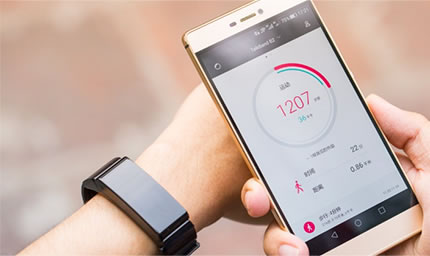
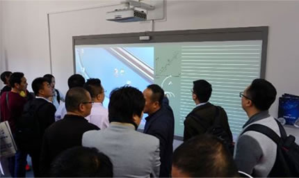

看啥都震撼 小米Max定义大屏手机新标杆小米Max的设计初衷源自手机重度用户对于大屏的刚性需求，所以“看什么都震撼”的大屏手机应运而生。小米Max正面采用2.5D曲面玻璃，在金属机身加入弧形收边，柔顺的曲面在边缘处与机身自然过渡，手指操作时更顺滑不硌手。其正面为纯净的白色，背面可选3种机身颜色：淡雅的金色、素净的银色、沉稳的浅灰。在将屏幕尽量做大的同时，小米Max的机身工艺却非常的轻薄，而且能轻松装入各种上衣口袋和牛仔裤口袋。
在配置上，小米Max拥有6.44英寸的大屏幕，配备了4850mAh大容量电池，并搭载高通骁龙652/650 高端处理器，最高可选4GB+128GB超大容量，还有1600万像素相位对焦相机、全网通3.0与指纹识别。小米Max将于5月17日上市，分为3GB+32GB、3GB+64GB4GB+128GB三个版本，售价分别为1499元、1699元和1999元。应用和手机双分身 MIUI 8就是好用与小米Max一同发布的MIUI 8，拥有全新的系统设计。小米创始人、董事长兼CEO雷军表示：“MIUI 8是迄今为止最好用的MIUI系统，它不断探索移动操作系统的黑科技，在多个方面取得突破创新。”MIUI 8有几十项重大功能改进，近千项细节体验优化。如应用分身和手机分身，计算器增加强大的“生活计算”，扫一扫增加多种生活场景实物扫描，以及一键视频特效、照片瘦身、长截屏、伪基站短信识别、省电模式、可滑动操作的悬浮球功能等等。除了黑科技的探索，MIUI 8系统经过了全新设计，色彩、动效、字体都有了非常大的升级改变。
据了解，小米公司将在5月16日正式开启MIUI 8论坛邀请内测，6月1日开放公测，6月17日会向更多米粉送上开发版。MIUI 8开发版将会支持小米手机2/2S/3/4/4C/4S/5/Max/红米/红米Note全系列以及小米Note全系列机型。新一代移动互联网平台悄然崛“MIUI系统经过六年时间不间断迭代升级变得越来越好用，小米手机加MIUI已经发展成为全新一代移动互联网平台。”雷军在发布会上露，MIUI全球联网激活用户突破2亿，MIUI平台上日活跃量过千万的应用已达21个。用户活跃度是产品在市场上受欢迎程度的真实体现。根据友盟指数2015年3月的统计报告，安卓设备活跃排名Top10中，小米手机占据6席，其中红米1S、小米3和小米4分列榜单的前三位。
而在2015年腾讯开放平台白皮书公布的数据，小米手机在安卓设备活跃排名Top10中独占9席。业内人士认为，用户活跃度除了能够证明小米手机真正的市场热度之外，更是证明了MIUI系统“好用”的本质。今年4月TalkingData公布的《2015年移动广告行业报告》中，小米应用商店用户覆盖率排名第三位，小米游戏中心用户覆盖率排名第五位。另外，《小米应用商店2016年第一季度报告》显示，截至2016年3月，小米应用商店应用分发量突破400亿大关。从2014年的25亿到如今的400亿，分发量翻了足足16倍。